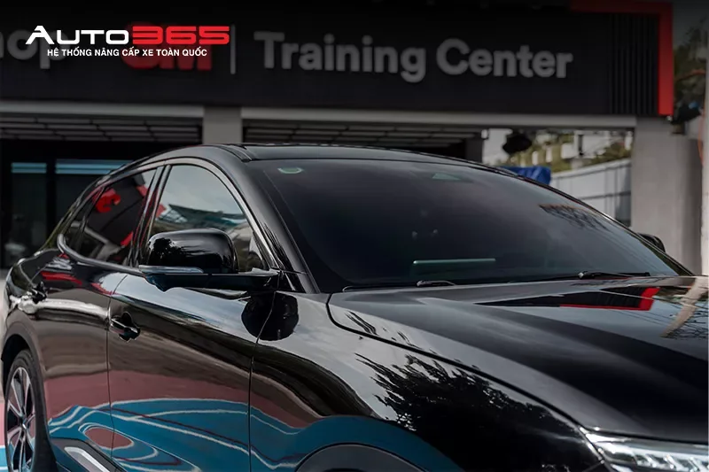
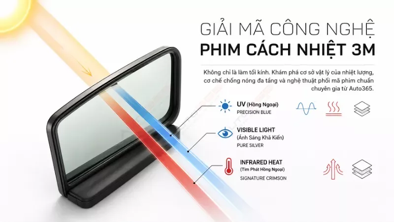
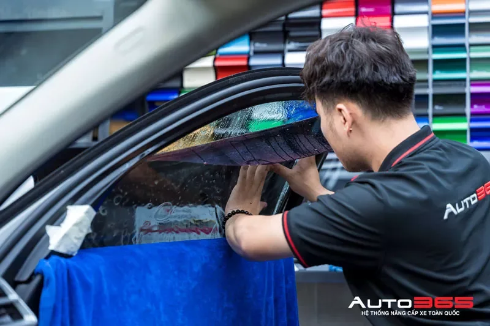
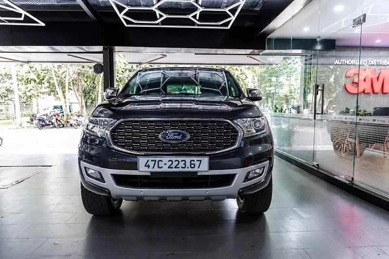
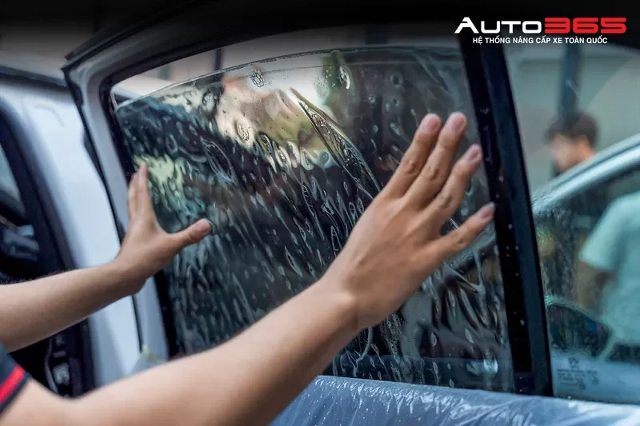

PHIM CÁCH NHIỆT
VinFast VF8 · hồ sơ dán phim cách nhiệt
Đối chiếu vị trí kính, cấu hình phim và quy trình kiểm tra trước bàn giao.
AUTO365 NEWSROOM
Cẩm nang nâng cấp ô tô, hồ sơ thi công thực tế và kiến thức chuyên sâu giúp bạn tìm đúng nội dung theo nhu cầu.

TÌM NỘI DUNG
Nhập từ khóa hoặc chọn bộ lọc để thu hẹp nội dung.
KHÁM PHÁ NHANH

So sánh phim, thông số và vị trí kính theo từng xe →

Bi LED, bi gầm, cấu hình ánh sáng và lưu ý lắp đặt →

Camera hành trình, camera 360 và nhu cầu sử dụng thực tế →

Bảo vệ sơn, đổi màu và các lưu ý khi thi công →

Tiện nghi, phụ kiện và các giải pháp nâng cấp theo nhu cầu →
HỒ SƠ THỰC TẾ
Cấu hình nâng cấp thực tế, lọc nhanh theo hãng xe, dòng xe và dịch vụ.
Đối chiếu vị trí kính, cấu hình phim và quy trình kiểm tra trước bàn giao.

Case thực tế để tham khảo phương án kính lái, kính sườn và kính hậu.

Tham khảo hốc lắp, phương án cố định và cấu hình ánh sáng thực tế.
Gợi ý cách đọc case thi công và những điểm nên kiểm tra trước khi lựa chọn.
Case tham khảo vị trí thi công, bề mặt và cách nghiệm thu sau hoàn thiện.
Tham khảo nhóm phụ kiện và cách lựa chọn theo nhu cầu sử dụng thực tế.
THƯ VIỆN NỘI DUNG
Nhóm thông tin nền giúp người đọc hiểu cách so sánh sản phẩm và nhu cầu sử dụng.
So sánh theo mục đích sử dụng, vị trí lắp và các yếu tố cần kiểm tra trước thi công.
Gợi ý nhóm tiêu chí để thu hẹp lựa chọn trước khi xem từng sản phẩm cụ thể.
Nội dung nền về bề mặt, vị trí thi công và cách kiểm tra sau khi hoàn thiện.
Điểm vào nhanh cho tin hệ thống, case mới và các cập nhật liên quan.
Ưu đãi chỉ hiển thị khi có dữ liệu chương trình còn hiệu lực và điều kiện rõ ràng.
Không có card demo phù hợp với bộ lọc hiện tại.
Ưu tiên hồ sơ xe và nội dung có nguồn nội bộ xác minh.
Claim kỹ thuật cần được rà soát trước khi public.
Ngày sửa đổi chỉ thay đổi khi nội dung thực sự được cập nhật.
Liên kết tới điểm dịch vụ và nội dung liên quan khi có dữ liệu phù hợp.